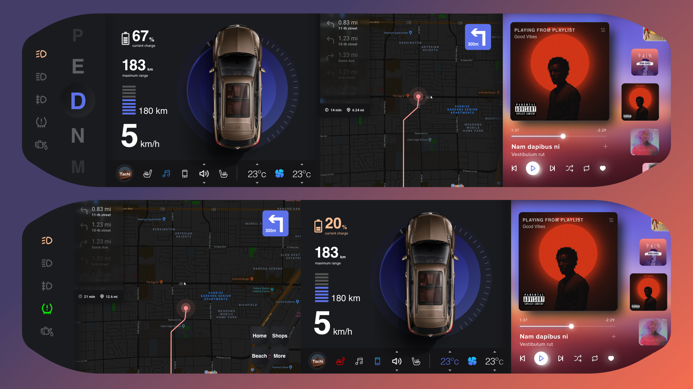
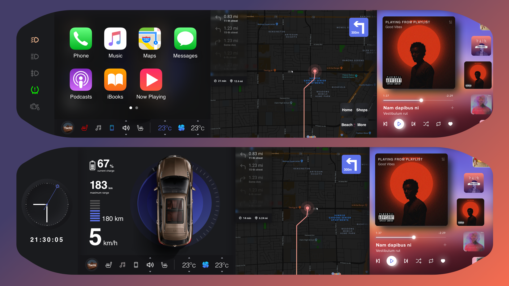
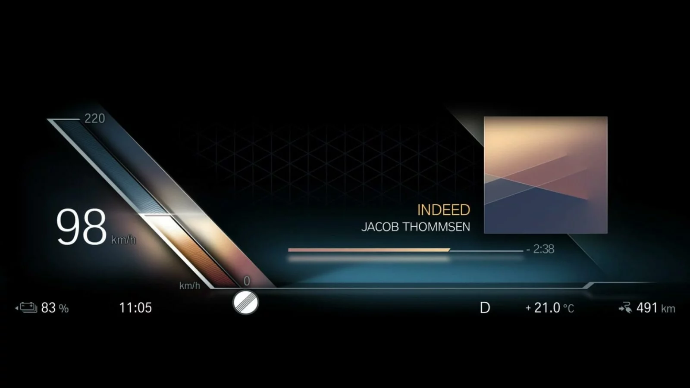
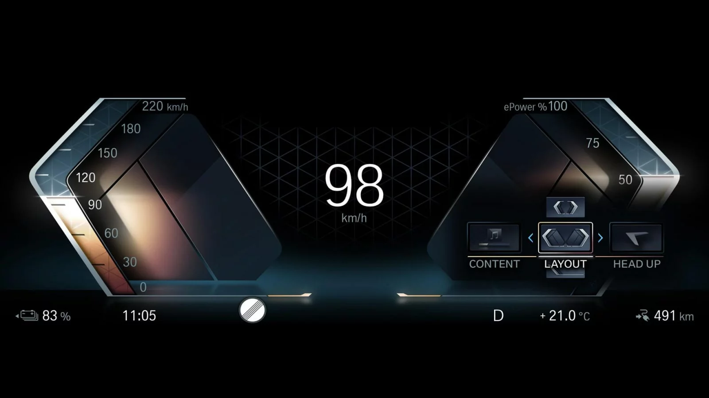

KIA New Era explored how a brand identity extends beyond form into a unified digital ecosystem, where mobile, web, and in-car experiences shape one coherent expression.
Iconmobile · Automotive · HMI Design · 2019–2022
KIA New Era


HMI Design Design System Automotive Cross-Platform Experience Digital Interface Design In-Car Interface Mobile & Web HMI Design Design System Automotive Cross-Platform Experience Digital Interface Design In-Car Interface Mobile & Web
The Mustang Mach-E demonstrates how digital interfaces and physical controls can work together, using a hybrid touchscreen and rotary dial to create intuitive, tactile interaction within a minimalist system.
The BMW i7 elevates this further, positioning digital experience as a core part of luxury, where technology, space, and interaction redefine what a flagship vehicle feels like.
Iconmobile · Automotive · HMI Design · 2019–2022
BMW ID 7.0


Advanced Digital HMI Automotive In-Car Interface Integrated Curved Display Cockpit Interaction Bar Rear Theater Screen Luxury Electric Sedan Advanced Digital HMI Automotive In-Car Interface Integrated Curved Display Cockpit Interaction Bar Rear Theater Screen Luxury Electric Sedan
Back to the beginning · 01 / 04
Verizon Identity Architecture
The invisible structure behind connected lives at scale.